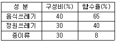
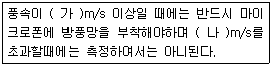

환경기능사 (2004-07-18 기출문제)
1과목: 대기오염방지
1. 수소이온농도가 4.2 x 10-3 mole 인 수용액의 pH는?
- 2.4
- 4.2
- 5.1
- 6.6
(정답률: 30%)

2. BOD가 200ppm, 폐수량이 400m3/d(일)인 공장에서 80m3인 폭기조를 건설하였다면 BOD 부하(kg/m3-day)는?
- 1
- 2
- 3
- 4
(정답률: 23%)
3. 지정폐기물과 가장 거리가 먼 것은?
- 폐산(pH 가 2.0 이하)
- 폐유(기름성분 5% 이상 함유)
- 폐벽돌
- 폐석면
(정답률: 64%)
4. 소음방지 대책 중 가장 효과적인 방법은?
- 소음기의 이용
- 장해물에 의한 차음효과
- 소음원의 제거 및 억제
- 실내에 흡음재료 사용
(정답률: 58%)
5. 차량 등에 많이 쓰이고, 부하능력이 광범위하며 구조가 복잡하여도 성능이 좋은 방진재료는?
- 공기용수철
- 휄트(felt)
- 코르크
- 방진고무
(정답률: 42%)
6. 지하수에 대한 설명 중 옳지 않은 것은?
- 지하수의 취수시설로는 우물, 집수매거등이 있다.
- 지하수는 빗물이나 지표수가 지층을 침투하여 지하로 스며든 물이다.
- 지하수의 수온은 연중 거의 일정하고 겨울에는 지표수에 비해 수온이 높다.
- 지하수는 부유물질이나 유기물,무기질등의 농도가 지표수에 비해 낮다.
(정답률: 65%)
7. 다음 폐수 중 생물학적 처리가 곤란한 것은?
- 가정 하수
- 축산 폐수
- 도금공장 폐수
- 맥주제조공장 폐수
(정답률: 60%)
8. 황산(1+9)는 무엇을 의미하는 것인가?
- 물 1mL와 황산 9mL를 혼합하여 제조한 용액
- 황산 1mL와 물 9mL를 혼합하여 제조한 용액
- 황산 1mL와 물 8mL를 혼합하여 제조한 용액
- 물 1mL와 황산 8mL를 혼합하여 제조한 용액
(정답률: 78%)
9. 해양오염이나 공장폐수의 요염지표로서 주로 사용되는 것은?
- pH
- DO
- COD
- BOD
(정답률: 40%)
10. 공기역학적 직경이 10㎛미만이며, 호흡기를 통해 체내로 유입되어 건강에 나쁜 영향을 미칠 수 있는 입자를 의미하는 것은?
- TSP
- TS
- SS
- PM10
(정답률: 54%)
11. 측정진동레벨에 암진동의 영향을 보정한 후 얻어진 진동레벨은?
- 진동레벨
- 평가진동레벨
- 대상진동레벨
- 암진동레벨
(정답률: 46%)
12. 다음은 오염물질과 그 제거 방법을 짝지은 것이다. 연결이 잘못된 것은?
- 염화수소-수세법
- 질소산화물-전기집진기
- 부유먼지-사이클론
- 황산화물-흡수법
(정답률: 57%)
13. 기체흡수와 관련이 가장 적은 것은?
- 헨리의 법칙
- 물질전달
- 총괄계수
- 원심력
(정답률: 45%)
14. 다음 중 폐기물을 압축처리하는 목적과 가장 거리가 먼것은?
- 소각효율증가
- 부피의 감소
- 운반비의 감소
- 매립지 수명연장
(정답률: 49%)
15. 국소 진동이 생겨 손가락 말초 혈관 순환 장애를 일으키는데 이것을 무엇이라 하는가?
- 청색증
- 레이노드씨병
- 이타이이타이병
- 미나마타병
(정답률: 60%)
2과목: 폐수처리
16. 다음중 소음을 줄이는 장치가 아닌 것은?
- 흡음닥트
- 밀폐상자
- 소음기
- 방진구
(정답률: 52%)
17. 전기집진장치에서 방전극이 갖추어야 할 조건으로 옳지 않은 것은?
- 액가스비가 클것
- 진동이나 요동에 영향을 받지 않을것
- 부식에 강하고 기계적 강도가 클것
- 방전특성이 좋도록 가는 단면이나 날카로운 부분이 있을것
(정답률: 30%)
18. 물속에 녹아 있는 유기물을 화학적으로 산화 시킬 때 소비되는 산화제의 양을 산소의 양으로 환산하여 mg/L로 나타낸 값은?
- DO
- SS
- COD
- BOD
(정답률: 44%)
19. 어느 동네에서 1주일간 쓰레기 수거상황을 조사한 결과는 다음과 같다. 1인 1일 쓰레기발생량은?(kg/인.일)[ 수거대상인구: 400,000명, 수거용적: 9000m3 적재시 밀도: 0.6톤/m3)
- 1.63
- 1.83
- 1.93
- 2.17
(정답률: 38%)
20. 매립지 선정요건으로 적절하지 않는 것은?
- 지하수가 지표면에 인접한 지역
- 주변 토양의 복토재 활용 가능성
- 경제성 있는 매립 용지 확보 가능성
- 폐기물 수거 편리성 및 기존 도로의 확보 가능성
(정답률: 65%)
21. 진동수가 100Hz이고 속도가 100m/sec인 파동의 파장은 몇 m 인가?
- 0.1
- 1
- 10
- 100
(정답률: 56%)
22. 폐수 처리시 염소 소독을 실시하는 목적과 가장 거리가 먼 것은?
- 살균
- 냄새 제거
- BOD 제거
- 중금속 제거
(정답률: 51%)
23. 다음 중 부영양화를 주로 일으키는 영양물질은?
- Na, Ca
- N, P
- N, Ca
- P, Mg
(정답률: 75%)
24. 오존층의 두께를 표시하는 단위는?
- ppm
- 프레온(freon)
- 돕슨(dobson)
- 링겔만 차트
(정답률: 80%)
25. 황함유량이 3%인 중유 10ton을 연소할 때 생성되는 SO2의 부피는?(단, 황은 모두 SO2로 전환된다)
- 32Sm3
- 140Sm3
- 210Sm3
- 300Sm3
(정답률: 47%)
26. 1차 집진을 축류식사이클론으로 하고, 2차 집진을 전기집진장치로 할 때 효율이 각각 50%, 95%이다. 총괄집진효율은?
- 70.5%
- 72.5%
- 87.5%
- 97.5%
(정답률: 30%)
27. 유동상 소각로에 대한 설명으로 틀린 것은?
- 유동매질의 손실로 인한 보충이 필요하다.
- 소각로 내부 온도의 자동제어로 열회수가 용이하다.
- 폐기물의 투입이나 유동화를 위해 파쇄가 필요하다.
- 기계적 구동 부분이 많아 고장율이 높다.
(정답률: 36%)
28. 단백질이 호기성 조건에서 분해되는 과정에서 가장 안정된 형태로서 질소질 분해의 최종 생성물은 무엇인가?
- 질산성 질소
- 아질산성 질소
- 암모니아성 질소
- 알부미노이드성 질소
(정답률: 46%)
29. 분자식이 C3H8인 기체연료 1m3를 연소하는데 필요한 이론 공기량은 몇 m3/Sm3 인가? (단, 연소반응식은 C3H8+5O2 → 3CO2+4H20 이다.)
- 21.74
- 23.81
- 217.4
- 238.1
(정답률: 49%)
30. 원심력 집진장치에서 집진효율을 증대시킬 수 있는 방법이 아닌 것은?
- 유입가스속도 감소
- 블로우 다운 효과
- 고율 싸이클론 설치
- 멀티 싸이클론 설치
(정답률: 47%)
31. 고상폐기물은 고형물 함량이 몇 % 이상인가?
- 5
- 15
- 35
- 45
(정답률: 66%)
32. 쓰레기를 압축시켜 용적감소율이 35% 인 경우 압축비는?
- 0.35
- 0.65
- 1.54
- 2.86
(정답률: 44%)
33. 청력손실이 옥타브 밴드 중심주파수 500∼2,000 Hz에서 몇 dB 이상일 때 난청이라 하는가?
- 15
- 25
- 35
- 45
(정답률: 44%)
34. 연소에 대한 설명 중 옳지 않은 것은?
- 연소는 산화반응이다.
- 회분이 많은 연료는 발열량이 높다.
- 연료 중 수분이 많을 때에는 점화가 어렵다.
- 연료에 포함된 불연성 물질, 황 등으로 대기오염 물질이 발생된다.
(정답률: 61%)
35. 대기오염을 일으킬 가능성이 높은 기후 조건은?
- 우천
- 바람
- 기온 역전
- 기온 상승
(정답률: 58%)
3과목: 폐기물처리
36. 소음 공해의 특징으로 옳지 않은 것은?
- 축적성이 없다.
- 감각 공해이다.
- 주위의 진정이 많다.
- 대책 후에 처리할 물질이 발생한다.
(정답률: 60%)
37. 사람의 귀로 들을 수 있는 음의 주파수 범위로 가장 알맞는 것은?
- 1∼20Hz
- 20∼20,000Hz
- 20∼20,000kHz
- 20∼20,000MHz
(정답률: 77%)
38. 폐수처리의 단위 공법 중 기본 원리가 다른 것은?
- 중화
- 여과
- 침전
- 스크리닝
(정답률: 43%)
39. pH 3인 폐수를 중화처리할 때, 사용하기에 적절하지 못한 약품은?
- NaOH
- Ca(OH)2
- H2SO4
- Na2CO3
(정답률: 44%)
40. 유기물을 호기성 상태에서 처리할 경우 최종 생성물로 바르게 짝지어진 것은?
- CO2, H2O, NO3-N
- CO, NH3, H2S
- CH4, NH3, H2S
- CO, CO2, CH4
(정답률: 43%)
41. 메탄(CH4) 1m3에 대하여 10.76m3의 공기를 사용하여 연소 하였다면 공기비는 얼마인가? (단, 공기중에서 산소의 부피백분율은 21%이다)
- 1.11
- 1.13
- 1.17
- 1.21
(정답률: 35%)
42. 연료가 완전 연소되기 위한 조건으로 틀린 것은?
- 공기의 공급이 충분해야한다.
- 연료와 공기의 혼합이 잘 되어야 한다.
- 연소실에서 체류시간이 짧아야한다.
- 연소온도를 높게 유지해야한다.
(정답률: 84%)
43. 용존산소를 측정할 때 적정용액으로 사용되는 것은?
- Na2S2O3 용액
- NaOH 용액
- H2SO4 용액
- K2Cr2O7 용액
(정답률: 22%)
44. 생물학적 폐수처리 공정의 미생물에 의한 반응속도는 온도의 영향을 받는다. 이를 잘 표현하는 식은?
- 이상기체(Ideal gas)식
- 스토크스(stokes)의 식
- 헤스(Hess)의 식
- 아레니우스(Arrhenius)식
(정답률: 23%)
45. 대장균군이 수질오염의 지표로 이용되는 이유로 타당하지 않는 것은?
- 다른 세균들보다 독성이 강하다.
- 분뇨를 포함한 하수의 유입가능성이 있다.
- 다른 세균류에 비해 검사가 용이하다.
- 대장균군은 다른 세균보다 생존력이 강하다.
(정답률: 38%)
46. 전기 절연성과 난연성 및 열안정성 등이 우수하여 변압기, 콘덴서의 절연유 및 열매체 등으로 사용되었지만 발암성으로 알려져 있어 현재 제조가 금지된 물질은?
- CFC
- BHC
- BTX
- PCB
(정답률: 60%)
47. 물보다 비중이 작은 부유물이나 액체 입자를 폐수로부터 분리시키는 부상법의 종류가 아닌 것은?
- 공기 부상법
- 가압 부상법
- 진공 부상법
- 산화 부상법
(정답률: 47%)
48. 급속 여과장치에 여과 수두손실에 영향을 주지 않는 인자는?
- 모래층의 두께
- 여과 속도
- 물의 점도
- 여과 면적
(정답률: 38%)
49. 다음 표와 같은 성분과 함수율을 갖는 도시 쓰레기의 평균 함수율은?

- 40.4%
- 42.4%
- 45.7%
- 47.1%
(정답률: 46%)
50. 폐기물의 관리요소 중 가장 많은 비용을 차지하는 것은?
- 파쇄
- 수거
- 적환
- 압축
(정답률: 70%)
51. 고형분 함유량이 5%인 폐수 1000kg을 증발 농축시켜 고형분함유량을 20%로 하려 한다면 제거 해야할 수분의 양은? (단, 비중은 1.0으로 한다)
- 550kg
- 650kg
- 750kg
- 850kg
(정답률: 47%)
52. 분뇨 처리장에서 발생하는 슬러지의 처리 순서가 적절한 것은?
- 농축― 소화― 탈수― 매립
- 소화― 농축― 탈수― 매립
- 탈수― 농축― 소화― 매립
- 농축― 탈수― 소화― 매립
(정답률: 54%)
53. 쓰레기를 소각할 때 소각효율이 낮은 원인으로 볼 수 있는 것은?
- 주입공기의 예열
- 적절한 공기비
- 쓰레기의 고른 파쇄
- 공기의 층류 흐름
(정답률: 59%)
54. 다음의 보기의 (가)와 (나)에 해당하는 숫자로 만 조합된 것은?

- 1, 3
- 2, 5
- 3, 5
- 5, 7
(정답률: 38%)
55. 대기오염물질중 입자상 물질의 농도단위표시로 사용되는 것은?
- ㎎/m3
- mL/m3
- ㎕/m3
- mL/L
(정답률: 41%)
4과목: 소음 진동학
56. 활성 슬러지(activated sludge)란?
- 포기조내에서 자란 갈색의 미생물
- 침사지에서 제거된 고형물
- 침사지에서 침전된 물질
- 소화조내의 슬러지
(정답률: 34%)
57. A침전지의 하수 처리 능력은 6,000m3/day이다. 유입 하수의 SS농도가 300㎎/L, 유출수의 SS농도가 200㎎/L일 때, 이 침전지의 SS제거율(%)은?
- 23
- 33
- 53
- 73
(정답률: 49%)
58. 물의 용존산소(DO) 농도는 온도가 내려감에 따라 어떻게 변하는가?
- 온도와는 전혀 관계가 없다.
- 감소한다.
- 증가한다.
- 수질에 따라 증가하기도 하고, 감소하기도 한다.
(정답률: 46%)
59. 귀의 구조별 역할 중 균형작용을 하는 곳은?
- 고막
- 유스타키오관
- 세반고리관
- 외이
(정답률: 28%)
60. 56[dB], 52[dB], 61[dB]의 세음원의 합은 몇 [dB]인가?
- 54
- 60
- 63
- 67
(정답률: 36%)